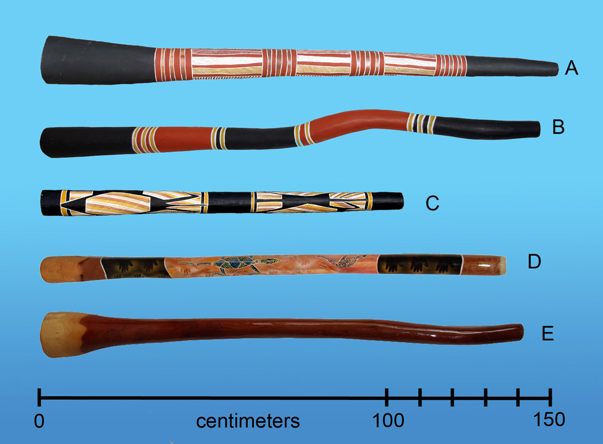

A didgeridoo története

A didgeridoo Ausztrália északi részének őslakos közösségeihez kötődő hangszer. Több helyi elnevezése is van.
Sok hagyományos didgeridoo termeszek által kivájt eukaliptuszfából készül. Hangját a játékos ajkának rezgése hozza létre.
Érdekességek
- A didgeridoo elnevezés nem őslakos szó.
- Egyik helyi neve a yiḏaki.
- A száj és a nyelv mozgása változtatja a hangszínt.
- A körlégzés segíthet a folyamatos hang fenntartásában.